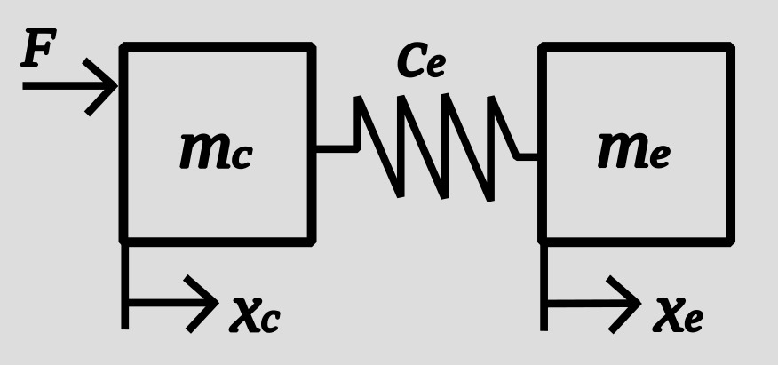

I hacked my 3d printer to test some control algorithms for oscillation free load positioning. On the left side, a polynomial trajectory of degree five is used as a setpoint for the printer cart. On the right side, the same trajectory is used as a setpoint for the load:
To find the cart trajectory, the load trajectory is transformed into cart coordinates, taking system dynamics into account. The trajectory time is the same for both movements. Thats the big advantage of this method, compared to input shaping or other filter methods.
It also works for a spring pendulum. (Since it's also a harmonic oscillator) I attached a rubber band to the load and positioned the cart vertically:
The math is astoundingly simple. Just model the system in the following way:

\(m_c\) is the cart mass, \(m_e\) is the loadmass, \(F\) describes the force that pushes the cart, \(c_e\) is the load stiffness, \(x_c\) is the cart position and \(x_e\) is the load position.
For the trajectory planning we are only interested in the transformation between cart and load coordinates. The balance of forces for \(m_e\) gives:
Reordering reveales:
With equation (2) it is possible to plan a two times differentiable trajectory for the load and receive the corresponding cart trajectory. In order to get the parameters \(m_e\) and \(c_e\) it's helpfull to realize that the period for the harmonic oscillator is defined by:
For the load trajectory I used:
I ended up writing my own stepper motor driver code because all the libraries I tried where to slow in generating the steps on my Arduino Uno.